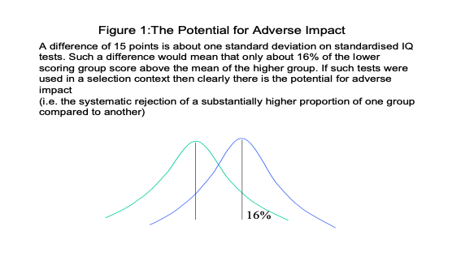
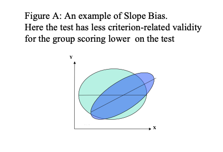
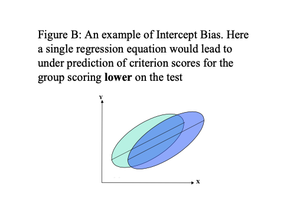
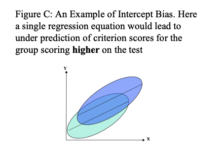
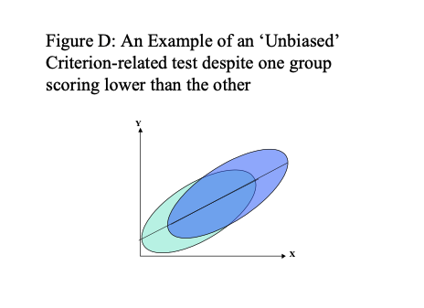
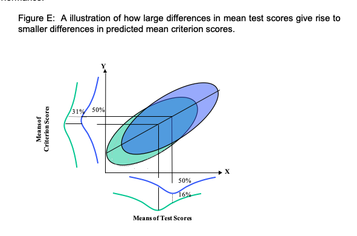

Chapter 7 Test Bias and Fairness
It is not unusual to find differences in average test scores between groups within a population. For example, many American Psychometric textbooks cite an average difference between particular groups of 15 points on standardised IQ tests. One such textbook, Kaplan & Saccuzzo (1997), state that “this is not a debatable issue”. However, why such differences exist certainly is a debatable issue.
7.1 The Potential for Adverse Impact
A difference of 15 points is about one standard deviation on standardised IQ tests. Such a difference would mean that only about 16% of the lower scoring group score above the mean of the higher group (see figure 1).
If such tests were used in a selection context then clearly there is the potential for adverse impact (i.e. the systematic rejection of a substantially higher proportion of one group compared to another)

Many authors make a distinction between test bias and test fairness. For these authors, whether or not a test is biased is a matter of “objective statistical indices that examine the patterning of test scores for relevant subpopulations” (Gregory, 1996, p.263). Whether a test is fair is considered to be a matter of social values, social consequences and ethical principles. Tests should be shown to be unbiased, but you may still not consider them to be fair.
7.2 How to investigate test bias
A central question is whether tests have differential validity. This is a question of whether inferences based on test scores are equally meaningful, useful and appropriate for different groups.
As such, investigating test bias will involve drawing upon all the aspects of test validation when making comparisons between groups. One obvious place to start is with the content validity of the test. Tests should take care to ensure that, as far as possible, the specific item content is not favouring one group over another. Thus, a test of verbal reasoning should endeavour to include words that are equally familiar to all groups who may take the test. Other tests may intend to measure understanding of word meanings rather than verbal reasoning e.g. a test of English vocabulary. In this case, it is much more difficult to exclude items that favour the majority culture or age groups, etc. The important point here is that, if such tests are to be used, there should be a clear requirement for this test.
7.3 Content Validity and DIF Analysis
Biased items can sometimes be identified through Differential item functioning (DIF) analysis. This method involves equating groups on the basis of overall score by taking samples from each group with about the same scores. Next, individual items are examined for any differences between the two ‘matched’ samples from the groups. Those items that show a significant difference should be removed.
## Criterion-Related Validity and Bias
An important approach to the evaluation of bias is to examine differences in the relationship between test scores and external criteria. Such criterion-related studies give the most direct assessment of the extent to which the test is misrepresenting the lower scoring groups.
There are a number of possible outcomes with such studies, and some of these are illustrated in figures A to D below.

In figures A, B and C using a single prediction line (regression line), derived from putting both groups together, would misrepresent the relationship between test score and criterion for both groups. Here then, the uniform use of the test would lead to bias. Using separate regression lines for different groups, and taking the highest performing members of these groups may avoid this problem. However, such a top down quota system may not be legal, even though such quota sampling would reduce adverse impact.
In figure D, a single regression line does fit the relationship between test score and criterion for both groups. Statistically, the test has not been shown to be biased, even though one group has a lower average test performance. However, although the test has not been shown to be biased, the situation illustrated in figure D could come about as a result of bias in both the test and the criterion against which it is being compared.
One further point to consider about the situation illustrated in figure D is that even though they may be large differences in mean test scores between the two groups, the difference in predicted criterion performance will not be so large. Figure E illustrates a situation where a test with a criterion related validity of 0.5 will give rise to a predicted mean difference in criterion performance that is half the difference in mean test performance.

Most US textbooks argue that there little evidence for differential validity of ability tests majority and minority Americans, but there is little research in the UK. However, on the whole, there appears to be little evidence of single group validity i.e. where the test is valid for one group but not another
7.4 The Fair Use of Tests
Test manuals should be checked for what has been done to try and ensure the fairness of the test, and assess the extent to which there are any group differences in test performance. Any group differences would not necessarily mean that the test was biased, but the effect of such differences should be monitored. Group differences on the test are likely to lead to some adverse impact because, as a general rule, separate norm tables for evaluating test performance should not be used. The Commission for Racial Equality (the CRE) did not recommend using separate norm groups. The norm group should be, as far as possible, similar to the applicant pool in terms of gender and ethnic representation, age, and educational background.
Whether a test, or indeed any other selection method, contravenes the Equality Act is a matter of whether the assessment (and format of assessment) is relevant to the job or role. If, however, there is adverse impact for a particular group, then it is particularly important to assess such issues as: whether the abilities and skills being measured are really relevant to the job; whether the tests are at the right level for the job and applicant pool; whether there are alternative methods with comparable validity but less adverse impact; whether the tests predict job performance for all groups equally well; whether training programmes for disadvantaged groups can offset differences. It should be noted that the ‘presumption of discrimination’ may be greater if minority groups are underrepresented in less specialised jobs. It should further be noted that adverse impact is not only a problem with standardised tests.
7.5 Sources of Information and Advice
There are a number of sources that can be referred to when using tests, or indeed, any other decision tools e.g. The Equality Act 2010 is the law which bans unfair treatment and helps achieve equal opportunities in the workplace and in wider society (Click here for link to Home Office Guidance).
7.6 From the website:
7.6.1 What’s included in the Equality Act?
The act replaced previous anti-discrimination laws with a single act to make the law simpler and to remove inconsistencies. This makes the law easier for people to understand and comply with. The act also strengthened protection in some situations. The act covers nine protected characteristics, which cannot be used as a reason to treat people unfairly. Every person has one or more of the protected characteristics, so the act protects everyone against unfair treatment. The protected characteristics are: • age • disability • gender reassignment • marriage and civil partnership • pregnancy and maternity • race • religion or belief • sex • sexual orientation
The Equality Act sets out the different ways in which it is unlawful to treat someone, such as direct and indirect discrimination, harassment, victimisation and failing to make a reasonable adjustment for a disabled person.
The British Psychological Society (the BPS) has launched a website at www.psychtesting.org.uk.
Within this site at http://www.psychtesting.org.uk/the-ptc/guidelinesandinformation.cfm
You can find: • A Code of Good Practice • Draft Data Protection and Privacy Issues in Employment Related Settings
• Principles for use of Published Psychological Tests in Research
• Dyslexia and Occupational Testing
• Visual Impairment and Psychological Testing
Test Publishers also have a number of Resources and Guidelines that often address ‘Best Practice’ issues and fairness:
Oxford Psychological Press (OPP) has a useful website offering HR tips and techniques at http://www.opp.eu.com/Pages/home.aspx
CEB: Talent Measurement. A large international company that has now taken over ASE (the previous publishers of the GAT and MOST). Offers some interesting resources http://www.shl.com/uk/expertise/disability-guidelines/
https://www.cebglobal.com/shl/uk/expertise/disability-guidelines/faq
7.7 Indicative Academic Reading
Barrett, A. (2011) Using psychometric test scores: Some warnings, explanations, and solutions for HR professionals [Online] (Accessed 12th Dec 2013) http://www.pbarrett.net/#whitepapers:1
Chung-Yan, G.A. & Cronshaw, S.F. (2002). A critical re-examination and analysis of cognitive ability tests using the Thorndike model of fairness. Journal of Occupational and Organizational Psychology, 75, 489-509.
Mathews, S. (1999). Testing People Fairly: The Best Practice Handbook. Windsor: NFER-NELSON.
Meade, A.W. & Fetze, M. (2009). Test Bias, Differential Prediction, and a Revised Approach for Determining the Suitability of a Predictor in a Selection Context. Organizational Research Methods,12, 738-761.
Biddle, D.A. & Noreen, P.M. (2006) Validity Generalization Vs. Title Vii: Can Employers Successfully Defend Tests Without Conducting Local Validation Studies? Labor Law Journal,57, 216-237.
Rafilson, F. (1991) The case for validity generalization [Online] (Accessed 12th Dec 2013) http://ericae.net/edo/ED338699.htm